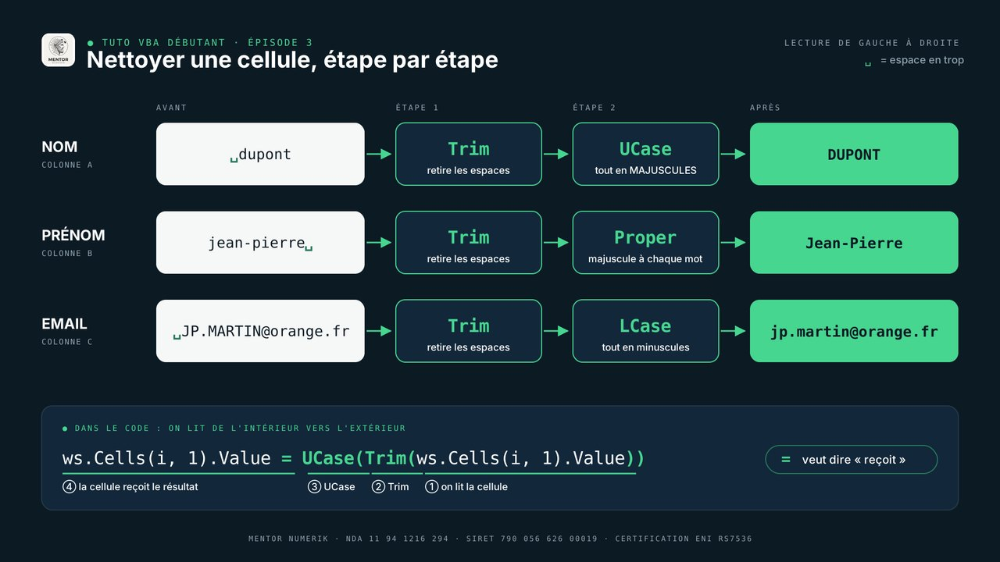

Majuscules au hasard, espaces en trop, emails mal saisis : une liste de contacts remplie par plusieurs personnes se dégrade vite. Une macro VBA la nettoie entièrement en une seconde — et recommence à l'identique à chaque nouvel import.
Dans cet article, vous écrivez une macro de 20 lignes, expliquée bloc par bloc, sans prérequis en programmation. C'est l'épisode 3 de notre série VBA : il réutilise la boucle de l'épisode 1 et ajoute les fonctions de texte.
Le résultat attendu
Votre fichier contient une feuille nommée Contacts : les titres en ligne 1, le nom en colonne A, le prénom en B et l'email en C. La macro applique une règle simple à chaque contact :
| Colonne | Règle | Avant | Après |
|---|---|---|---|
| Nom | Tout en majuscules | ␣dupont | DUPONT |
| Prénom | Une majuscule par mot | jean-pierre␣ | Jean-Pierre |
| Tout en minuscules | ␣JP.MARTIN@orange.fr | jp.martin@orange.fr |
␣ = espace en trop. Dans tous les cas, les espaces au début et à la fin disparaissent.
Le code complet
Ouvrez l'éditeur avec Alt + F11 (Option + F11 sur Mac), puis Insertion › Module, et collez ce code :
Sub NettoyerContacts()
Dim ws As Worksheet
Dim derniereLigne As Long
Dim i As Long
' On cible la feuille Contacts sur laquelle nous allons travailler
Set ws = ThisWorkbook.Worksheets("Contacts")
' On cherche la dernière ligne remplie en colonne A
derniereLigne = ws.Cells(ws.Rows.Count, 1).End(xlUp).Row
' On passe sur chaque contact, de la ligne 2 à la dernière
For i = 2 To derniereLigne
' Colonne A : le NOM en majuscules, sans espaces autour
ws.Cells(i, 1).Value = UCase(Trim(ws.Cells(i, 1).Value))
' Colonne B : le Prénom avec une majuscule à chaque début de mot
ws.Cells(i, 2).Value = Application.WorksheetFunction.Proper(Trim(ws.Cells(i, 2).Value))
' Colonne C : l'email en minuscules, sans espaces autour
ws.Cells(i, 3).Value = LCase(Trim(ws.Cells(i, 3).Value))
Next i
MsgBox derniereLigne - 1 & " contacts nettoyés !", vbInformation
End SubVoyons maintenant chaque bloc.
1. La structure et les variables
Sub NettoyerContacts()
Dim ws As Worksheet
Dim derniereLigne As Long
Dim i As Long
' ... la suite de la macro
End SubUne macro commence par Sub suivi de son nom, et se termine par End Sub. Dim déclare une variable : une information que la macro garde pour la réutiliser. As indique son type.
| Variable | Type | Contenu |
|---|---|---|
| ws | Worksheet | La feuille Contacts |
| derniereLigne | Long | Le numéro de la dernière ligne remplie |
| i | Long | Le compteur de la boucle : 2, 3, 4… |
2. Cibler la feuille avec Set
Set ws = ThisWorkbook.Worksheets("Contacts")ThisWorkbook désigne le classeur qui contient la macro, Worksheets("Contacts") l'onglet qui porte exactement ce nom. On écrit Set car un onglet est un objet, et non une simple valeur. Ensuite, ws suffit pour parler de la feuille, même si un autre onglet est affiché.
3. Trouver la dernière ligne
derniereLigne = ws.Cells(ws.Rows.Count, 1).End(xlUp).RowVBA part de la toute dernière ligne de la colonne A, puis « remonte » jusqu'à la première cellule remplie : c'est l'équivalent de Ctrl + ↑ (Cmd + ↑ sur Mac). Avec 20 contacts, il trouve la ligne 21. Avec 400, la ligne 401 — sans rien modifier.
4. Parcourir chaque contact avec For…Next
For i = 2 To derniereLigne
' traitement de la ligne i
Next iOn démarre à 2 car la ligne 1 contient les titres. Pour lire une cellule, on utilise Cells(ligne, colonne) : Cells(i, 1) est la colonne A de la ligne en cours, Cells(i, 2) la colonne B.
Cells s'écrit ligne d'abord, colonne ensuite. Cells(5, 3) désigne la cellule C5, et non E3.
5. Nettoyer chaque cellule
ws.Cells(i, 1).Value = UCase(Trim(ws.Cells(i, 1).Value))Cette ligne se lit de l'intérieur vers l'extérieur :
- On lit la cellule :
ws.Cells(i, 1).Value→ « ␣dupont ». Trimretire les espaces au début et à la fin → « dupont ».UCasemet tout en majuscules → « DUPONT ».- La cellule reçoit le résultat : en VBA, le signe
=veut dire « reçoit ».

| Fonction VBA | Ce qu'elle fait | Équivalent Excel |
|---|---|---|
| Trim | Retire les espaces au début et à la fin | SUPPRESPACE |
| UCase | Met tout en MAJUSCULES | MAJUSCULE |
| LCase | Met tout en minuscules | MINUSCULE |
| Proper | Met une majuscule au début de chaque mot | NOMPROPRE |
Proper n'est pas une fonction VBA : on l'emprunte à Excel avec Application.WorksheetFunction. Elle gère les prénoms composés, comme Jean-Pierre. Pour utiliser ces fonctions directement dans les cellules, lisez notre article sur les fonctions texte d'Excel.
6. Le message de fin
MsgBox derniereLigne - 1 & " contacts nettoyés !", vbInformationMsgBox affiche une boîte de message. On retire 1 à la dernière ligne pour ne pas compter les titres. Le signe & colle le nombre et le texte : « 20 contacts nettoyés ! ».
Exécuter votre macro
- Revenez dans Excel et appuyez sur Alt + F8 (Développeur › Macros sur Mac).
- Sélectionnez
NettoyerContacts, puis cliquez sur Exécuter. - Enregistrez le classeur au format .xlsm, sinon la macro sera perdue.
Une macro ne s'annule pas avec Ctrl + Z. Testez-la toujours sur une copie de votre fichier. Le fichier d'entraînement contient un onglet Sauvegarde pour recommencer.
Le tuto en vidéo
Suivez la macro codée en direct, bloc par bloc.
Les erreurs fréquentes
| Message ou symptôme | Cause probable |
|---|---|
| « L'indice n'appartient pas à la sélection » | L'onglet ne s'appelle pas exactement Contacts. |
| Les titres sont modifiés | La boucle démarre à 1 au lieu de 2. |
| Des espaces restent au milieu d'un nom | Trim ne traite que le début et la fin : utilisez Application.WorksheetFunction.Trim. |
| La macro a disparu à la réouverture | Classeur enregistré en .xlsx au lieu de .xlsm. |
À vous de jouer
Votre liste comporte une colonne Ville ? Ajoutez une ligne dans la boucle, sur le même modèle, avec le numéro de colonne 4, pour mettre la ville en majuscules.
À retenir
.End(xlUp).Rowadapte la macro à n'importe quelle longueur de liste.For…Next+Cells(i, colonne)traitent chaque contact, ligne par ligne.- Une ligne imbriquée se lit de l'intérieur vers l'extérieur :
UCase(Trim(…)). - Trim, UCase, LCase et Proper suffisent pour nettoyer du texte.
- Travaillez sur une copie et enregistrez en .xlsm.
Faites certifier vos compétences Excel
Préparation à la certification ENI RS7536, éligible au CPF · Formation 100 % distanciel, sur vos propres fichiers · Bilan gratuit, réponse sous 24h.
Voir les formations Se préinscrire